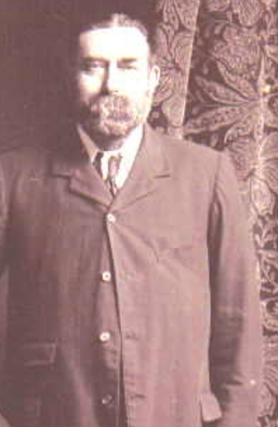
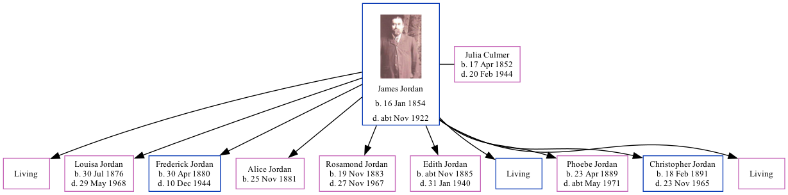

James Jordan 1854 - c1922 [ Home ] | [ Calendar ] | [ Surnames Index ] | [ Family History ]James Jordan , the husband of Julia Culmer (the first cousin three-times-removed on the mother's side of Nigel Horne ), was born in Faversham, Kent, England on Jan 16, 18541,2,3 and married Julia (with whom he had 10 children: Sarah Elizabeth , Louisa , Frederick John Thomas , Alice Ann Harriet , Rosamond Julia , Edith Emma Nellie , James George Charles , Phoebe May , Christopher Gerald and Kathleen Mary , along with 3 surviving children) on St Mary Of Charity Church, Church Road in Faversham on Apr 1, 18764 .
James spent all of his life in Kent, England. Throughout his life, he lived at 2 Mill Place in Faversham on Apr 3, 18811 , on Apr 5, 18915 , on Mar 31, 19016 and on Apr 2, 19117 .
He died c. Nov 1922 in Faversham2 .
Children Louisa was born on Jul 30, 1876Frederick John Thomas was born on Apr 30, 1880Alice Ann Harriet was born on Nov 25, 1881Rosamond Julia was born on Nov 19, 1883Edith Emma Nellie was born c. Nov 1885Phoebe May was born on Apr 23, 1889Christopher Gerald was born on Feb 18, 1891Citations 1881 England, Wales & Scotland Census - Findmypast (was age 27 and the head of the household) England & Wales deaths 1837-2007 - Findmypast England Marriages 1538-1973 - Findmypast Kent, Canterbury Archdeaconry Marriages - Findmypast 1891 England, Wales & Scotland Census - Findmypast (was age 37 and the head of the household) 1901 England, Wales & Scotland Census - Findmypast (was age 47 and the head of the household) 1911 Census for England & Wales - Findmypast (was age 57 and the head of the household) Media James Jordan  1901 England, Wales & Scotland Census - GBC/1901/0006632156 1911 Census For England & Wales - GBC-1911-RG14-04395-0273-1 England & Wales deaths 1837-2007 - BMD/D/1922/4/AZ/000487/039 Family Tree Map
Generated by ged2site . Last updated on Feb 28, 2025